Exposition photo / STAY ARTY
TVINTED DVRK
Série photographique exposée chez STAY ARTY, construite comme une traversée urbaine froide: façades vitrées, lignes verticales, fragments lumineux et silence architectural.
Intention
Une ville mentale, presque silencieuse.
TVINTED DVRK part d'une observation de l'architecture contemporaine comme matière émotionnelle. Les bâtiments deviennent des masses, des plans, des reflets; la ville n'est pas montrée comme un décor, mais comme une présence froide et intérieure.
La mise en page laisse volontairement de l'air entre les œuvres pour retrouver une sensation d'exposition: chaque image doit pouvoir être regardée seule, puis relue dans l'ensemble de la série.
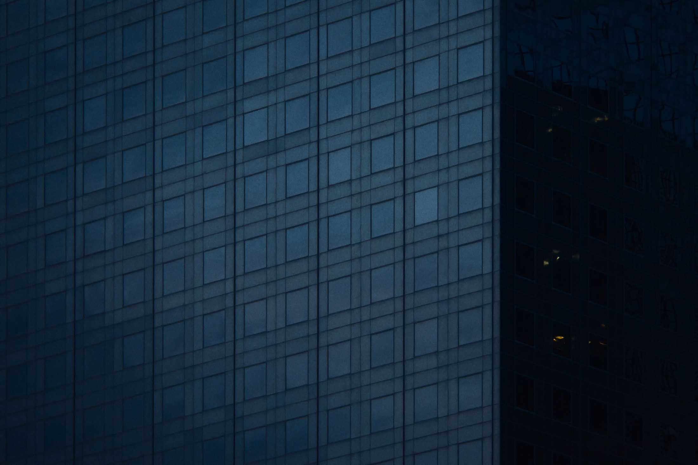
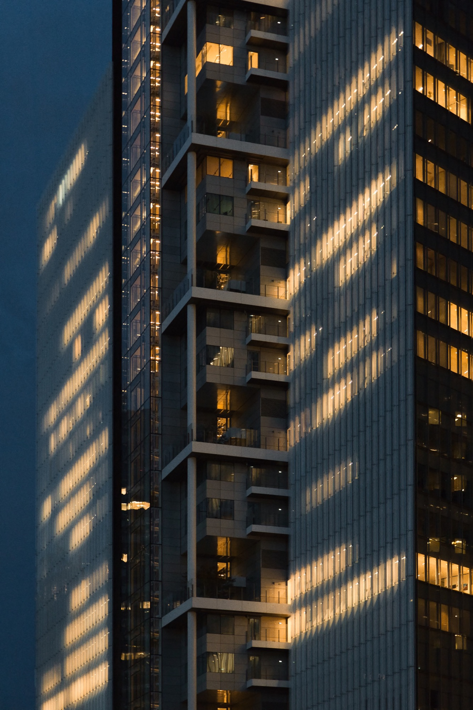
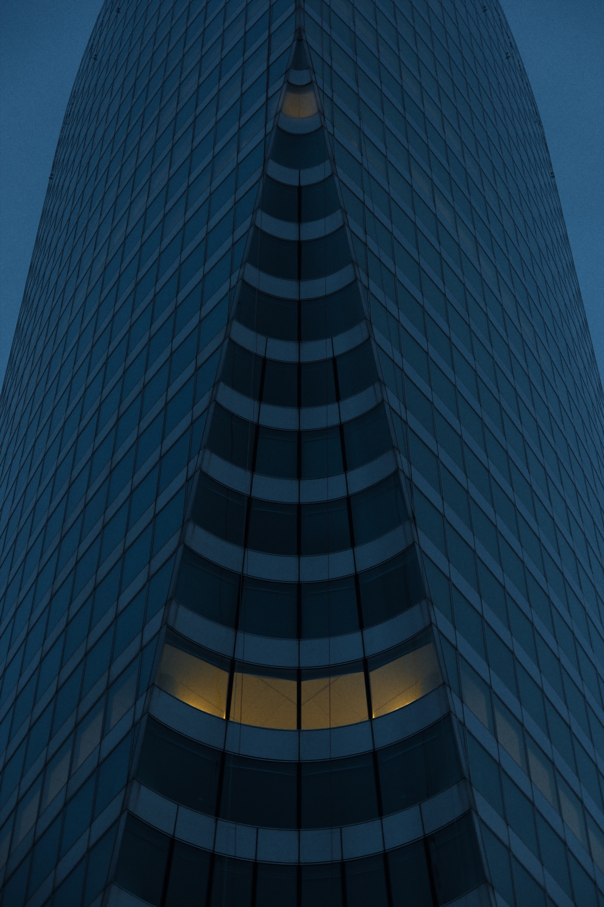
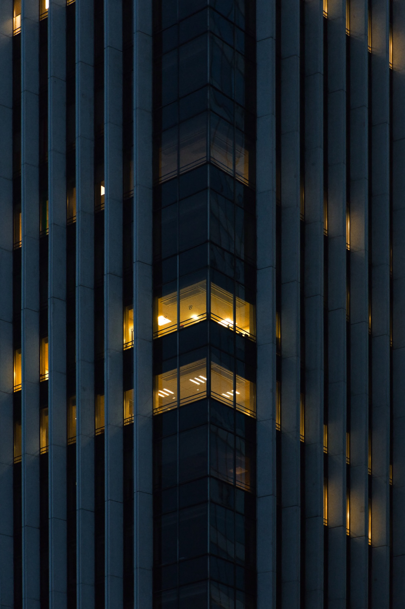
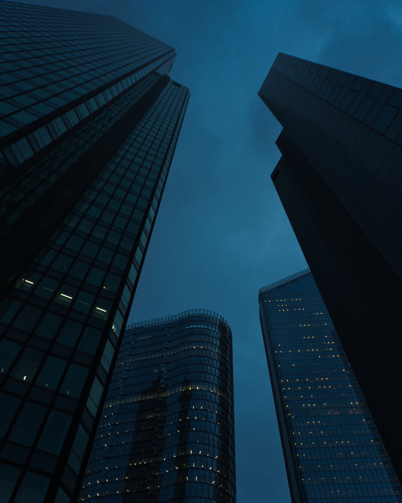
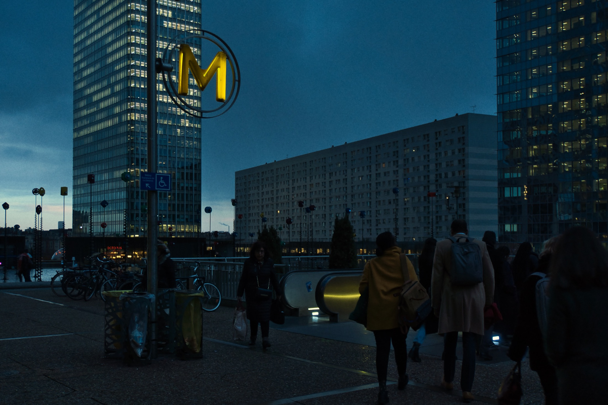
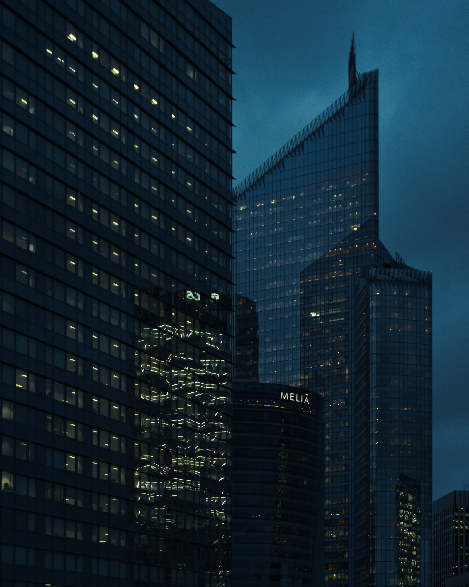
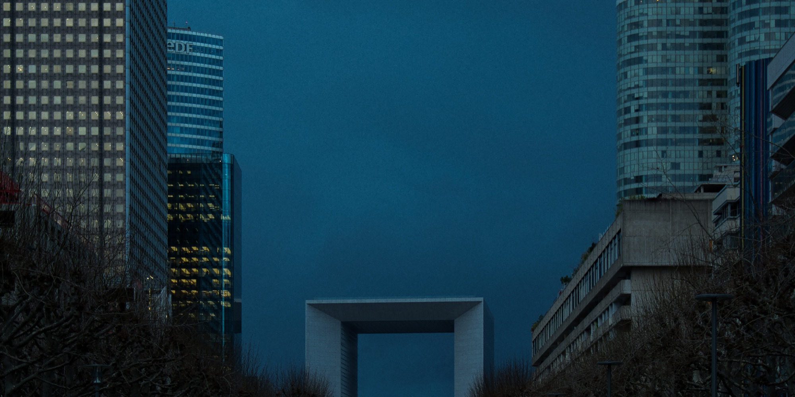
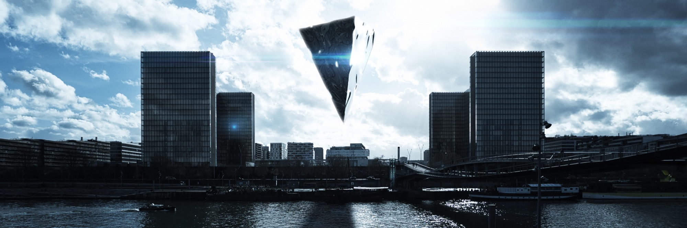
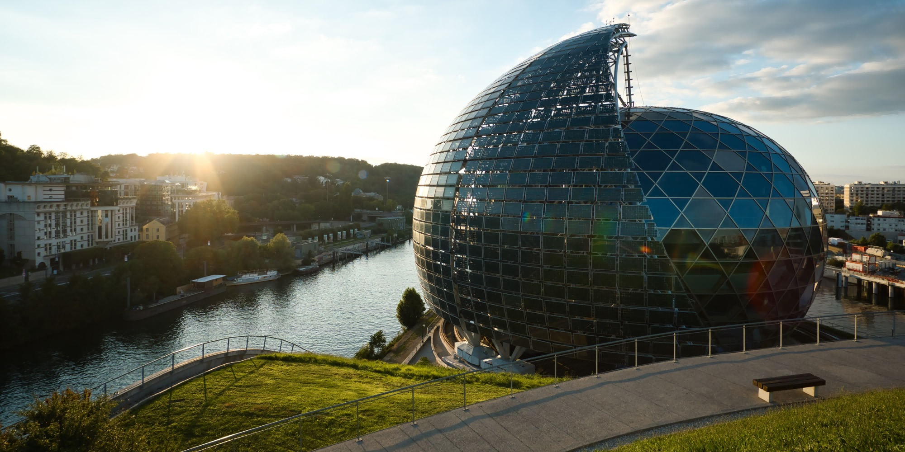
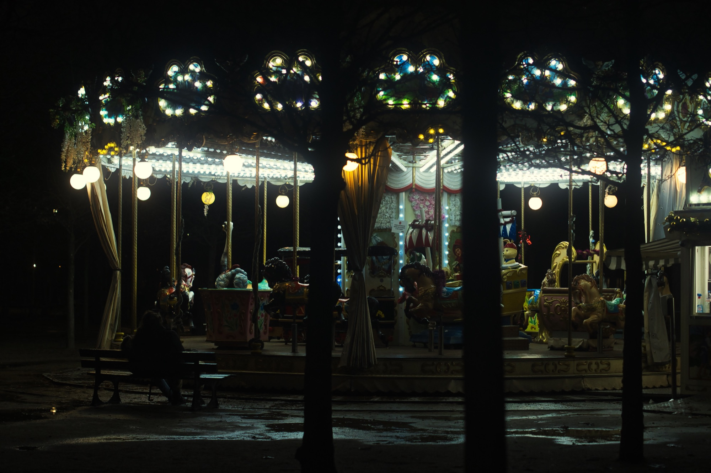
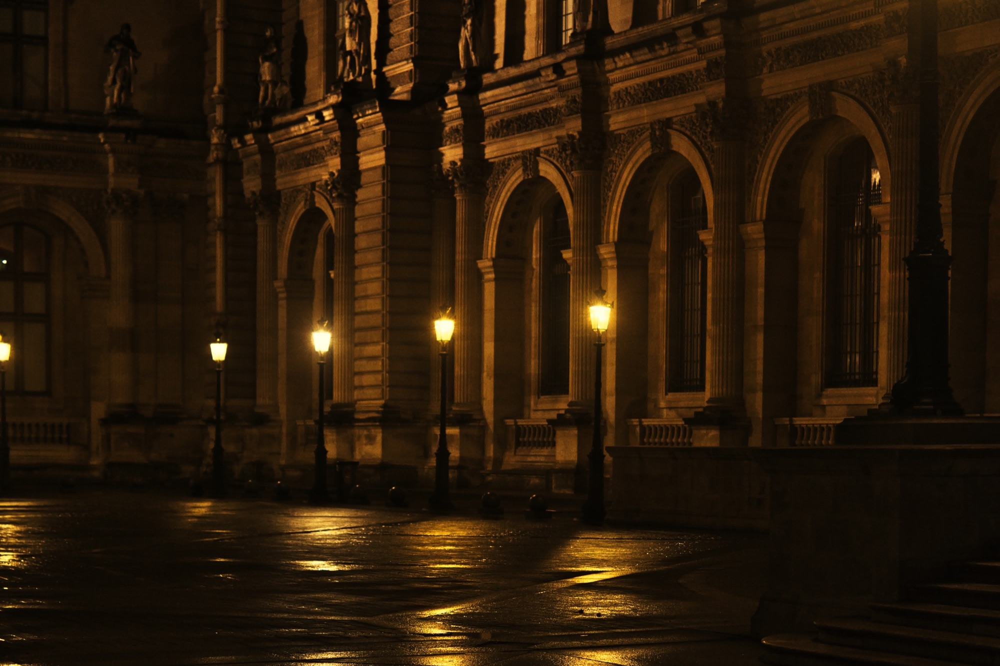
Accrochage et lecture de série
Le travail de sélection se concentre sur le rythme: alterner images très verticales, vues plus horizontales et respirations graphiques pour créer une progression. Les titres courts renforcent cette sensation de signal urbain, presque comme des repères dans une ville abstraite.
Communication
Les supports de communication restent regroupés à part: ils prolongent l'identité de l'exposition sans se confondre avec les œuvres. Le bandeau installe le climat, tandis que le format story adapte la série à une lecture mobile.
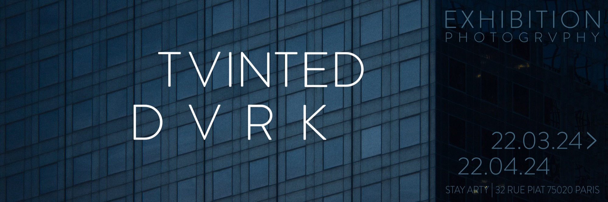
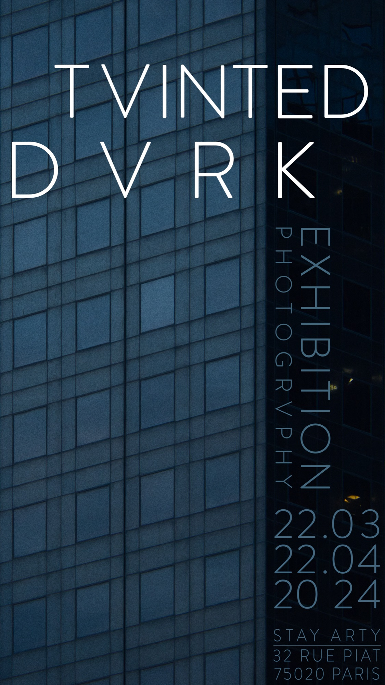